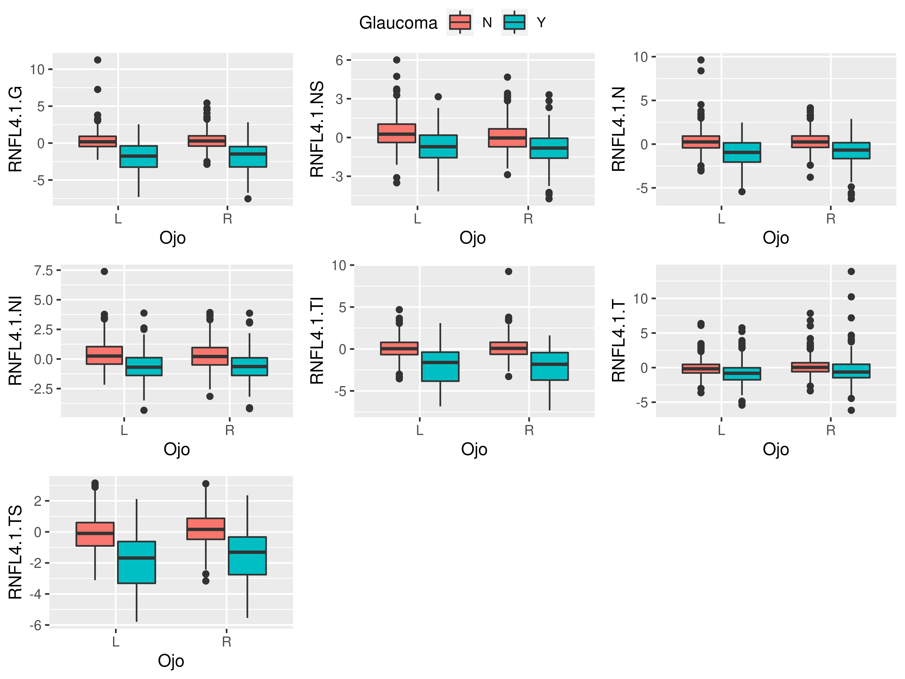
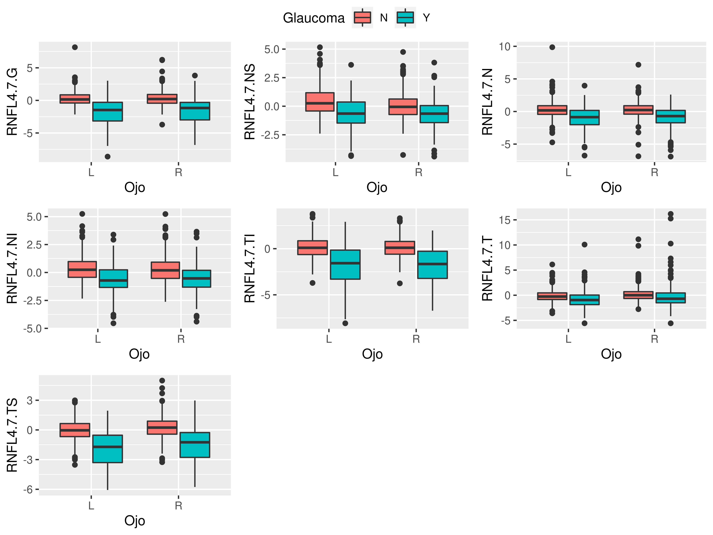
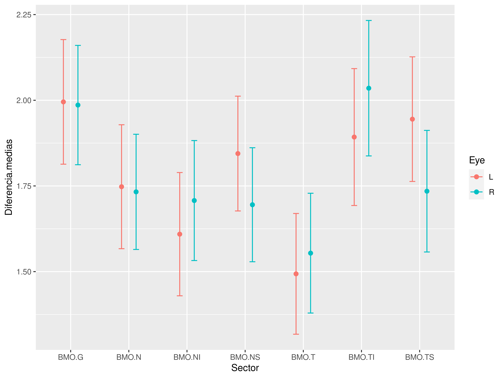
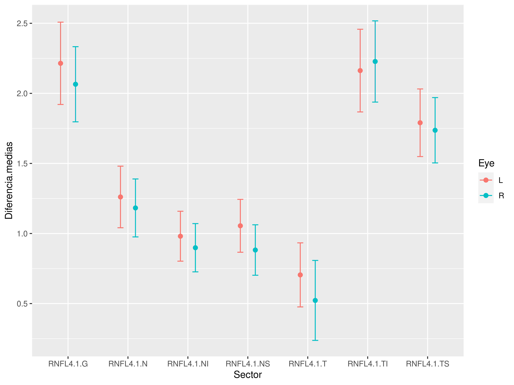

Análisis de los anillos neuroretinianos
2018-09-26
Estadística Descriptiva
Edad, Género y Ojos
| Glaucoma | n | mean | sd | median | min | max | skew | kurtosis | |
|---|---|---|---|---|---|---|---|---|---|
| X11 | N | 1531 | 47.51 | 18.68 | 49.8 | 8.4 | 89.7 | -0.1585 | -0.9156 |
| X12 | Y | 464 | 67.13 | 13.62 | 68.75 | 22.2 | 95.5 | -0.5378 | -0.148 |
Evolución del Glaucoma con la Edad

Se observa claramente que la prevalencia del glaucoma aumenta con la edad.

FoBMO.Angle, Displacement y BMO.Area
Ojo izquierdo
| Glaucoma | n | mean | sd | median | min | max | |
|---|---|---|---|---|---|---|---|
| FoBMO.Angle1 | N | 766 | -7.347 | 3.501 | -7.31 | -27.17 | 4.04 |
| FoBMO.Angle2 | Y | 233 | -9.387 | 4.45 | -9.13 | -29.64 | 14.39 |
| Displacement1 | N | 766 | 38.4 | 31.65 | 31 | 0 | 275 |
| Displacement2 | Y | 233 | 47.19 | 39.68 | 34 | 2 | 287 |
| BMO.Area1 | N | 766 | 1.983 | 0.3967 | 1.936 | 0.914 | 4.28 |
| BMO.Area2 | Y | 233 | 1.968 | 0.4519 | 1.925 | 0.53 | 3.448 |
| skew | kurtosis | |
|---|---|---|
| FoBMO.Angle1 | -0.318 | 1.089 |
| FoBMO.Angle2 | 0.0893 | 4.277 |
| Displacement1 | 2.83 | 12.76 |
| Displacement2 | 2.208 | 7.31 |
| BMO.Area1 | 0.9613 | 2.484 |
| BMO.Area2 | 0.4599 | 1.056 |

Ojo derecho
| Glaucoma | n | mean | sd | median | min | max | |
|---|---|---|---|---|---|---|---|
| FoBMO.Angle1 | N | 765 | -5.715 | 3.516 | -5.84 | -19.66 | 6.05 |
| FoBMO.Angle2 | Y | 231 | -6.029 | 4.151 | -5.82 | -20.22 | 4.88 |
| Displacement1 | N | 765 | 37.51 | 31.46 | 29 | 1 | 268 |
| Displacement2 | Y | 231 | 44.26 | 42.83 | 33 | 3 | 351 |
| BMO.Area1 | N | 765 | 1.975 | 0.3898 | 1.927 | 1.083 | 3.901 |
| BMO.Area2 | Y | 231 | 1.944 | 0.4416 | 1.902 | 0.783 | 3.674 |
| skew | kurtosis | |
|---|---|---|
| FoBMO.Angle1 | -0.1483 | 0.6348 |
| FoBMO.Angle2 | -0.2271 | -0.0264 |
| Displacement1 | 2.496 | 9.645 |
| Displacement2 | 3.466 | 18.11 |
| BMO.Area1 | 0.7404 | 0.923 |
| BMO.Area2 | 0.6451 | 1.124 |


BMO
Ojo izquierdo
| Glaucoma | n | mean | sd | median | min | max | |
|---|---|---|---|---|---|---|---|
| BMO.G1 | N | 766 | 0.3442 | 1.043 | 0.2079 | -2.297 | 4.515 |
| BMO.G2 | Y | 232 | -1.643 | 1.259 | -1.734 | -4.585 | 1.903 |
| BMO.NS1 | N | 766 | 0.4427 | 1.062 | 0.4244 | -3.176 | 4.57 |
| BMO.NS2 | Y | 233 | -1.392 | 1.145 | -1.494 | -4.216 | 1.586 |
| BMO.N1 | N | 766 | 0.2617 | 1.002 | 0.1846 | -3.646 | 3.998 |
| BMO.N2 | Y | 233 | -1.474 | 1.267 | -1.542 | -4.486 | 2.263 |
| BMO.NI1 | N | 766 | 0.1617 | 0.9516 | 0.1136 | -2.242 | 3.901 |
| BMO.NI2 | Y | 233 | -1.431 | 1.272 | -1.486 | -4.657 | 2.07 |
| BMO.TI1 | N | 766 | 0.2223 | 1.004 | 0.1531 | -1.917 | 4.227 |
| BMO.TI2 | Y | 232 | -1.645 | 1.434 | -1.53 | -4.87 | 2.135 |
| BMO.T1 | N | 766 | 0.3689 | 1.18 | 0.2375 | -2.185 | 6.747 |
| BMO.T2 | Y | 232 | -1.134 | 1.176 | -1.151 | -4.055 | 2.123 |
| BMO.TS1 | N | 766 | 0.3603 | 1.1 | 0.2247 | -3.522 | 5.422 |
| BMO.TS2 | Y | 233 | -1.571 | 1.252 | -1.655 | -4.788 | 1.764 |
| skew | kurtosis | |
|---|---|---|
| BMO.G1 | 0.6469 | 0.9979 |
| BMO.G2 | 0.1879 | 0.1352 |
| BMO.NS1 | 0.2479 | 0.1352 |
| BMO.NS2 | 0.2333 | -0.0575 |
| BMO.N1 | 0.213 | 0.4804 |
| BMO.N2 | 0.3144 | 0.0927 |
| BMO.NI1 | 0.3935 | 0.2224 |
| BMO.NI2 | 0.1657 | -0.2014 |
| BMO.TI1 | 0.7059 | 0.8244 |
| BMO.TI2 | 0.0605 | -0.2913 |
| BMO.T1 | 1.105 | 3.017 |
| BMO.T2 | 0.0755 | 0.0603 |
| BMO.TS1 | 0.8033 | 1.57 |
| BMO.TS2 | 0.0683 | -0.1903 |
Se observan correlaciones fuertes entre todos los sectores tanto de ojos sanos como de enfermos.
Ojo derecho
| Glaucoma | n | mean | sd | median | min | max | |
|---|---|---|---|---|---|---|---|
| BMO.G1 | N | 765 | 0.3814 | 1.03 | 0.284 | -2.25 | 4.196 |
| BMO.G2 | Y | 231 | -1.645 | 1.232 | -1.846 | -5.116 | 1.293 |
| BMO.NS1 | N | 765 | 0.2841 | 1.007 | 0.2342 | -2.183 | 4.108 |
| BMO.NS2 | Y | 231 | -1.427 | 1.154 | -1.573 | -4.031 | 1.763 |
| BMO.N1 | N | 765 | 0.368 | 0.9894 | 0.3371 | -3.225 | 4.104 |
| BMO.N2 | Y | 231 | -1.402 | 1.182 | -1.567 | -4.578 | 1.766 |
| BMO.NI1 | N | 765 | 0.237 | 0.9854 | 0.187 | -2.904 | 4.07 |
| BMO.NI2 | Y | 231 | -1.513 | 1.24 | -1.62 | -4.457 | 2.172 |
| BMO.TI1 | N | 765 | 0.2889 | 1.045 | 0.176 | -2.785 | 4.627 |
| BMO.TI2 | Y | 231 | -1.791 | 1.424 | -1.855 | -5.333 | 2.178 |
| BMO.T1 | N | 765 | 0.4184 | 1.18 | 0.2901 | -2.608 | 6.702 |
| BMO.T2 | Y | 231 | -1.184 | 1.225 | -1.189 | -4.983 | 2.287 |
| BMO.TS1 | N | 765 | 0.2897 | 1.065 | 0.1717 | -2.378 | 4.323 |
| BMO.TS2 | Y | 231 | -1.459 | 1.252 | -1.492 | -4.787 | 2.422 |
| skew | kurtosis | |
|---|---|---|
| BMO.G1 | 0.6423 | 0.9005 |
| BMO.G2 | 0.2346 | -0.2352 |
| BMO.NS1 | 0.4518 | 0.2062 |
| BMO.NS2 | 0.2928 | -0.3167 |
| BMO.N1 | 0.1925 | 0.509 |
| BMO.N2 | 0.3531 | -0.1204 |
| BMO.NI1 | 0.3235 | 0.1439 |
| BMO.NI2 | 0.3538 | 0.0272 |
| BMO.TI1 | 0.7354 | 0.9768 |
| BMO.TI2 | -0.0015 | -0.1164 |
| BMO.T1 | 0.9174 | 1.849 |
| BMO.T2 | -0.0651 | 0.1899 |
| BMO.TS1 | 0.7794 | 0.8287 |
| BMO.TS2 | 0.1038 | 0.123 |
Se observan correlaciones fuertes entre todos los sectores tanto de ojos sanos como de enfermos.
Comparación de distribuciones por glaucoma y ojo


Se aprecian distribuciones similares en los ojos izquierdos y derechos tanto de pacientes sanos como enfermos.
Anillo 3.5
Ojo izquierdo
| Glaucoma | n | mean | sd | median | min | max | |
|---|---|---|---|---|---|---|---|
| Rim3.5.G1 | N | 766 | 0.3303 | 1.112 | 0.2299 | -2.475 | 10.91 |
| Rim3.5.G2 | Y | 233 | -2.062 | 2.217 | -1.868 | -9.038 | 2.653 |
| Rim3.5.NS1 | N | 766 | 0.3405 | 1.151 | 0.2835 | -2.403 | 13.5 |
| Rim3.5.NS2 | Y | 233 | -0.849 | 1.292 | -0.8485 | -4.627 | 2.425 |
| Rim3.5.N1 | N | 766 | 0.3475 | 1.106 | 0.3122 | -2.756 | 11.42 |
| Rim3.5.N2 | Y | 233 | -0.9634 | 1.532 | -0.8913 | -5.529 | 2.818 |
| Rim3.5.NI1 | N | 766 | 0.3457 | 1.065 | 0.2641 | -2.495 | 4.587 |
| Rim3.5.NI2 | Y | 233 | -0.7874 | 1.334 | -0.764 | -4.58 | 3.259 |
| Rim3.5.TI1 | N | 766 | 0.0777 | 1.116 | 0.0015 | -3.876 | 4.059 |
| Rim3.5.TI2 | Y | 233 | -2.197 | 2.258 | -1.698 | -7.488 | 2.116 |
| Rim3.5.T1 | N | 766 | -0.0574 | 1.055 | -0.1601 | -3.866 | 6.672 |
| Rim3.5.T2 | Y | 233 | -0.918 | 1.693 | -0.8819 | -5.901 | 5.29 |
| Rim3.5.TS1 | N | 766 | -0.077 | 1.051 | -0.0965 | -3.018 | 3.191 |
| Rim3.5.TS2 | Y | 233 | -1.723 | 1.612 | -1.501 | -5.588 | 1.892 |
| skew | kurtosis | |
|---|---|---|
| Rim3.5.G1 | 1.481 | 10.6 |
| Rim3.5.G2 | -0.3847 | -0.3382 |
| Rim3.5.NS1 | 2.061 | 21.37 |
| Rim3.5.NS2 | -0.151 | -0.1184 |
| Rim3.5.N1 | 1.53 | 12.9 |
| Rim3.5.N2 | -0.1334 | -0.2155 |
| Rim3.5.NI1 | 0.2547 | 0.1419 |
| Rim3.5.NI2 | 0.1069 | 0.1685 |
| Rim3.5.TI1 | 0.2174 | 0.2019 |
| Rim3.5.TI2 | -0.3816 | -0.9634 |
| Rim3.5.T1 | 0.8089 | 2.764 |
| Rim3.5.T2 | 0.3332 | 1.375 |
| Rim3.5.TS1 | 0.0811 | -0.1552 |
| Rim3.5.TS2 | -0.2025 | -0.598 |

Se observan correlaciones moderadas entre todos los sectores de los ojos enfermos y más débiles en los ojos sanos. Las correlaciones son menores que en el anillo BMO, aunque podría ser debido a la existencia de bastantes datos atípicos.
Ojo derecho
| Glaucoma | n | mean | sd | median | min | max | |
|---|---|---|---|---|---|---|---|
| Rim3.5.G1 | N | 765 | 0.4163 | 1.208 | 0.3508 | -2.958 | 11.88 |
| Rim3.5.G2 | Y | 229 | -1.9 | 2.131 | -1.541 | -8.184 | 4 |
| Rim3.5.NS1 | N | 765 | 0.0069 | 1.054 | -0.0088 | -2.544 | 4.284 |
| Rim3.5.NS2 | Y | 229 | -0.9335 | 1.252 | -0.9472 | -4.079 | 3.428 |
| Rim3.5.N1 | N | 765 | 0.3821 | 1.172 | 0.312 | -3.877 | 14.69 |
| Rim3.5.N2 | Y | 229 | -0.8959 | 1.491 | -0.6676 | -6.152 | 2.485 |
| Rim3.5.NI1 | N | 765 | 0.3429 | 1.104 | 0.2303 | -3.267 | 5.974 |
| Rim3.5.NI2 | Y | 230 | -0.7697 | 1.309 | -0.7903 | -4.913 | 4.39 |
| Rim3.5.TI1 | N | 765 | 0.127 | 1.159 | 0.0277 | -3.48 | 7.139 |
| Rim3.5.TI2 | Y | 230 | -2.23 | 2.201 | -1.984 | -8.3 | 2.113 |
| Rim3.5.T1 | N | 765 | 0.1907 | 1.201 | 0.0488 | -3.321 | 10.71 |
| Rim3.5.T2 | Y | 229 | -0.6099 | 1.948 | -0.7075 | -5.547 | 12.43 |
| Rim3.5.TS1 | N | 765 | 0.2674 | 1.037 | 0.2657 | -2.929 | 4.882 |
| Rim3.5.TS2 | Y | 229 | -1.438 | 1.639 | -1.176 | -5.292 | 2.872 |
| skew | kurtosis | |
|---|---|---|
| Rim3.5.G1 | 1.684 | 11.67 |
| Rim3.5.G2 | -0.3996 | -0.0834 |
| Rim3.5.NS1 | 0.4045 | 0.3393 |
| Rim3.5.NS2 | 0.2904 | 0.5073 |
| Rim3.5.N1 | 2.608 | 28.8 |
| Rim3.5.N2 | -0.7478 | 0.8523 |
| Rim3.5.NI1 | 0.3952 | 0.6655 |
| Rim3.5.NI2 | 0.2011 | 1.21 |
| Rim3.5.TI1 | 0.7744 | 2.772 |
| Rim3.5.TI2 | -0.3747 | -0.7253 |
| Rim3.5.T1 | 1.687 | 9.572 |
| Rim3.5.T2 | 1.562 | 8.606 |
| Rim3.5.TS1 | 0.1674 | 0.5138 |
| Rim3.5.TS2 | -0.2846 | -0.5951 |

Se observan correlaciones moderadas entre todos los sectores de los ojos enfermos, excepto entre el sector temporal y los sectores nasal y nasal inferior, y más débiles en los ojos sanos. Las correlaciones son menores que en el anillo BMO, aunque podría ser debido a la existencia de bastantes datos atípicos.
Comparación de distribuciones por glaucoma y ojo


Se aprecian distribuciones similares en los ojos izquierdos y derechos tanto de pacientes sanos como enfermos.
Anillo 4.1
Ojo izquierdo
| Glaucoma | n | mean | sd | median | min | max | |
|---|---|---|---|---|---|---|---|
| Rim4.1.G1 | N | 766 | 0.2938 | 1.402 | 0.1761 | -2.257 | 23.94 |
| Rim4.1.G2 | Y | 229 | -1.932 | 2.154 | -1.69 | -7.297 | 2.535 |
| Rim4.1.NS1 | N | 766 | 0.376 | 1.363 | 0.2581 | -3.509 | 21.69 |
| Rim4.1.NS2 | Y | 229 | -0.6872 | 1.315 | -0.7069 | -4.17 | 3.156 |
| Rim4.1.N1 | N | 766 | 0.3097 | 1.27 | 0.2527 | -3.064 | 17.12 |
| Rim4.1.N2 | Y | 229 | -0.9694 | 1.559 | -0.963 | -5.436 | 2.474 |
| Rim4.1.NI1 | N | 766 | 0.3229 | 1.084 | 0.2513 | -2.168 | 7.387 |
| Rim4.1.NI2 | Y | 230 | -0.6539 | 1.24 | -0.6889 | -4.33 | 3.879 |
| Rim4.1.TI1 | N | 766 | 0.0976 | 1.115 | 0.0345 | -3.556 | 4.688 |
| Rim4.1.TI2 | Y | 230 | -2.082 | 2.173 | -1.656 | -6.844 | 3.085 |
| Rim4.1.T1 | N | 766 | -0.0814 | 1.089 | -0.1688 | -3.636 | 9.119 |
| Rim4.1.T2 | Y | 229 | -0.7825 | 1.65 | -0.7862 | -5.422 | 5.751 |
| Rim4.1.TS1 | N | 766 | -0.0699 | 1.538 | -0.0948 | -3.111 | 30.06 |
| Rim4.1.TS2 | Y | 229 | -1.887 | 1.738 | -1.665 | -5.798 | 2.118 |
| skew | kurtosis | |
|---|---|---|
| Rim4.1.G1 | 7.103 | 109.2 |
| Rim4.1.G2 | -0.3803 | -0.4746 |
| Rim4.1.NS1 | 5.19 | 76.91 |
| Rim4.1.NS2 | -0.0228 | -0.0956 |
| Rim4.1.N1 | 3.924 | 44.39 |
| Rim4.1.N2 | -0.2879 | -0.1935 |
| Rim4.1.NI1 | 0.5946 | 2.014 |
| Rim4.1.NI2 | 0.1977 | 0.4344 |
| Rim4.1.TI1 | 0.2289 | 0.2525 |
| Rim4.1.TI2 | -0.3355 | -0.756 |
| Rim4.1.T1 | 1.528 | 8.925 |
| Rim4.1.T2 | 0.4945 | 1.656 |
| Rim4.1.TS1 | 9.796 | 190 |
| Rim4.1.TS2 | -0.2578 | -0.7424 |

Se observan correlaciones de moderadas a fuertes entre todos los sectores de los ojos enfermos y más débiles en los ojos sanos. Las correlaciones son menores que en el anillo BMO y similares a las del anillo 3.5.
Ojo derecho
| Glaucoma | n | mean | sd | median | min | max | |
|---|---|---|---|---|---|---|---|
| Rim4.1.G1 | N | 765 | 0.3264 | 1.124 | 0.2838 | -2.872 | 8.922 |
| Rim4.1.G2 | Y | 229 | -1.747 | 1.978 | -1.478 | -7.538 | 2.818 |
| Rim4.1.NS1 | N | 765 | 0.0287 | 1.062 | -0.0339 | -2.881 | 4.674 |
| Rim4.1.NS2 | Y | 229 | -0.8666 | 1.258 | -0.8412 | -4.744 | 3.308 |
| Rim4.1.N1 | N | 765 | 0.3273 | 1.098 | 0.2504 | -3.785 | 11.43 |
| Rim4.1.N2 | Y | 229 | -0.8714 | 1.481 | -0.6784 | -6.248 | 2.888 |
| Rim4.1.NI1 | N | 765 | 0.2781 | 1.106 | 0.2121 | -3.156 | 7.133 |
| Rim4.1.NI2 | Y | 229 | -0.6504 | 1.182 | -0.6611 | -4.191 | 3.865 |
| Rim4.1.TI1 | N | 765 | 0.1237 | 1.142 | 0.0786 | -3.286 | 9.241 |
| Rim4.1.TI2 | Y | 229 | -2.11 | 2.142 | -1.827 | -7.313 | 1.617 |
| Rim4.1.T1 | N | 765 | 0.1304 | 1.118 | 0.0358 | -3.358 | 7.845 |
| Rim4.1.T2 | Y | 229 | -0.3605 | 2.146 | -0.6394 | -6.169 | 13.9 |
| Rim4.1.TS1 | N | 765 | 0.1896 | 1.018 | 0.16 | -3.166 | 3.104 |
| Rim4.1.TS2 | Y | 229 | -1.538 | 1.679 | -1.302 | -5.544 | 2.357 |
| skew | kurtosis | |
|---|---|---|
| Rim4.1.G1 | 1.004 | 4.813 |
| Rim4.1.G2 | -0.3612 | -0.2002 |
| Rim4.1.NS1 | 0.4938 | 0.4273 |
| Rim4.1.NS2 | -0.047 | 0.6142 |
| Rim4.1.N1 | 1.557 | 13.42 |
| Rim4.1.N2 | -0.7018 | 0.9491 |
| Rim4.1.NI1 | 0.5707 | 1.701 |
| Rim4.1.NI2 | 0.3069 | 1.202 |
| Rim4.1.TI1 | 0.8617 | 4.859 |
| Rim4.1.TI2 | -0.3368 | -0.8805 |
| Rim4.1.T1 | 1.228 | 5.363 |
| Rim4.1.T2 | 2.138 | 10.61 |
| Rim4.1.TS1 | -0.0097 | -0.0605 |
| Rim4.1.TS2 | -0.3609 | -0.5693 |
Se observan correlaciones de moderadas a fuertes entre todos los sectores de los ojos enfermos, excepto en el temporal con los sectores nasales, y más débiles en los ojos sanos. Las correlaciones son menores que en el anillo BMO y que en el 3.5, aunque podría ser debido a la existencia de datos atípicos.
Comparación de distribuciones por glaucoma y ojo


Se aprecian distribuciones similares en los ojos izquierdos y derechos tanto de pacientes sanos como enfermos.
Anillo 4.7
Ojo izquierdo
| Glaucoma | n | mean | sd | median | min | max | |
|---|---|---|---|---|---|---|---|
| Rim4.7.G1 | N | 766 | 0.2647 | 1.054 | 0.1544 | -2.157 | 8.158 |
| Rim4.7.G2 | Y | 229 | -1.749 | 2.145 | -1.458 | -8.625 | 3.019 |
| Rim4.7.NS1 | N | 766 | 0.4097 | 1.203 | 0.2572 | -2.393 | 5.593 |
| Rim4.7.NS2 | Y | 229 | -0.5863 | 1.407 | -0.6698 | -4.364 | 4.065 |
| Rim4.7.N1 | N | 766 | 0.2622 | 1.182 | 0.1724 | -4.731 | 11.88 |
| Rim4.7.N2 | Y | 230 | -0.8849 | 1.699 | -0.8514 | -6.764 | 4.125 |
| Rim4.7.NI1 | N | 766 | 0.3029 | 1.065 | 0.2461 | -2.333 | 5.243 |
| Rim4.7.NI2 | Y | 230 | -0.6255 | 1.297 | -0.7081 | -4.546 | 3.389 |
| Rim4.7.TI1 | N | 766 | 0.1508 | 1.088 | 0.1029 | -3.712 | 3.772 |
| Rim4.7.TI2 | Y | 230 | -1.801 | 2.202 | -1.572 | -8.086 | 2.915 |
| Rim4.7.T1 | N | 766 | -0.1308 | 1.063 | -0.2622 | -3.593 | 6.121 |
| Rim4.7.T2 | Y | 229 | -0.7118 | 1.881 | -0.9538 | -5.576 | 10.08 |
| Rim4.7.TS1 | N | 766 | -0.0517 | 1.039 | -0.0347 | -3.529 | 2.99 |
| Rim4.7.TS2 | Y | 229 | -1.875 | 1.775 | -1.717 | -6.069 | 1.943 |
| skew | kurtosis | |
|---|---|---|
| Rim4.7.G1 | 1.263 | 6.753 |
| Rim4.7.G2 | -0.3462 | -0.2706 |
| Rim4.7.NS1 | 0.5946 | 0.5754 |
| Rim4.7.NS2 | 0.0329 | 0.2343 |
| Rim4.7.N1 | 2.021 | 17.56 |
| Rim4.7.N2 | -0.1691 | 0.4904 |
| Rim4.7.NI1 | 0.3739 | 0.4732 |
| Rim4.7.NI2 | 0.075 | 0.2693 |
| Rim4.7.TI1 | 0.1755 | 0.1494 |
| Rim4.7.TI2 | -0.3359 | -0.5617 |
| Rim4.7.T1 | 0.7918 | 2.265 |
| Rim4.7.T2 | 1.212 | 4.375 |
| Rim4.7.TS1 | -0.085 | 0.1355 |
| Rim4.7.TS2 | -0.289 | -0.7169 |

Se observan correlaciones de moderadas a fuertes entre todos los sectores de los ojos enfermos, y más débiles o casi nulas en los ojos sanos. Las correlaciones son menores que en el anillo BMO pero mayores que en los anillos 3.5 y 4.1.
Ojo derecho
| Glaucoma | n | mean | sd | median | min | max | |
|---|---|---|---|---|---|---|---|
| Rim4.7.G1 | N | 765 | 0.3002 | 1.129 | 0.2182 | -3.716 | 9.92 |
| Rim4.7.G2 | Y | 228 | -1.567 | 2.001 | -1.181 | -6.835 | 3.812 |
| Rim4.7.NS1 | N | 765 | 0.035 | 1.078 | -0.0494 | -4.266 | 4.748 |
| Rim4.7.NS2 | Y | 230 | -0.6855 | 1.335 | -0.6468 | -4.41 | 6.538 |
| Rim4.7.N1 | N | 765 | 0.2883 | 1.158 | 0.2303 | -6.868 | 12.59 |
| Rim4.7.N2 | Y | 230 | -0.8956 | 1.642 | -0.709 | -6.919 | 3.145 |
| Rim4.7.NI1 | N | 765 | 0.2506 | 1.125 | 0.1963 | -2.624 | 7.886 |
| Rim4.7.NI2 | Y | 230 | -0.5567 | 1.238 | -0.5418 | -4.398 | 3.654 |
| Rim4.7.TI1 | N | 765 | 0.1237 | 1.08 | 0.1038 | -3.758 | 5.331 |
| Rim4.7.TI2 | Y | 230 | -1.859 | 2.058 | -1.682 | -6.719 | 1.974 |
| Rim4.7.T1 | N | 765 | 0.1098 | 1.196 | 0.0039 | -2.774 | 11.13 |
| Rim4.7.T2 | Y | 228 | -0.2328 | 2.534 | -0.6949 | -5.582 | 16.18 |
| Rim4.7.TS1 | N | 765 | 0.2486 | 1.014 | 0.2406 | -3.259 | 4.987 |
| Rim4.7.TS2 | Y | 229 | -1.488 | 1.686 | -1.248 | -5.767 | 2.974 |
| skew | kurtosis | |
|---|---|---|
| Rim4.7.G1 | 1.366 | 8.091 |
| Rim4.7.G2 | -0.2828 | -0.1858 |
| Rim4.7.NS1 | 0.5334 | 0.7201 |
| Rim4.7.NS2 | 0.6229 | 3.58 |
| Rim4.7.N1 | 1.542 | 19.62 |
| Rim4.7.N2 | -0.8347 | 1.215 |
| Rim4.7.NI1 | 0.8194 | 2.921 |
| Rim4.7.NI2 | 0.0567 | 1.04 |
| Rim4.7.TI1 | 0.2941 | 0.6404 |
| Rim4.7.TI2 | -0.3455 | -0.8234 |
| Rim4.7.T1 | 2.086 | 14.5 |
| Rim4.7.T2 | 2.847 | 13.7 |
| Rim4.7.TS1 | 0.142 | 1.009 |
| Rim4.7.TS2 | -0.2875 | -0.4932 |
Se observan correlaciones de moderadas a fuertes entre todos los sectores de los ojos enfermos, excepto en el temporal con los sectores nasales, y más débiles o casi nulas en los ojos sanos. Las correlaciones son menores que en el anillo BMO similares a los anillos 3.5 y 4.1, aunque podría ser debido a la existencia de datos atípicos.
Comparación de distribuciones por glaucoma y ojo


Se aprecian distribuciones similares en los ojos izquierdos y derechos tanto de pacientes sanos como enfermos.
Comparación de medias y proporciones
Sexo
Comparación de la proporción de mujeres y hombres con glaucoma
| Proporción.Mujeres | Proporción.Hombres | Diferencia.proporciones |
|---|---|---|
| 0.4332 | 0.5715 | -0.1383 |
| lim.inf.int.conf | lim.sup.int.conf | p-valor |
|---|---|---|
| -0.1912 | -0.08548 | 2.174e-07 |
Ojo
Comparación de la proporción de ojos izquierdo y derechos con glaucoma.
| Estadístico de McNemar | p-valor |
|---|---|
| 282.5 | 2.114e-63 |
Existe relación estadísticamente significativa entre el glaucoma y los ojos, es decir, los ojos izquierdo y derecho no son independientes.
Edad
Comparación de las edades medias en sanos y enfermos.
| Media.Sanos | Media.Glaucoma | Diferencia.medias | lim.inf.int.conf | |
|---|---|---|---|---|
| Age | 47.51 | 67.13 | -19.62 | -21.18 |
| lim.sup.int.conf | p-valor | |
|---|---|---|
| Age | -18.07 | 9.384e-107 |
Existen diferencias estadísticamente muy significativas entre las edades medias de los pacientes sanos y los pacientes con glaucoma. La edad media de los pacientes con glaucoma es entre 18.0667 y 21.1767 años mayor que la de los sanos.
Comparación de las edades medias de mujeres y hombres con glaucoma.
| Media.Hombres | Media.Mujeres | Diferencia.medias | lim.inf.int.conf |
|---|---|---|---|
| 69.54 | 65.28 | 4.257 | 1.827 |
| lim.sup.int.conf | p-valor |
|---|---|
| 6.686 | 0.0006282 |
Existen diferencias estadísticamente muy significativas entre las edades medias de hombres y mujeres. La edad media de las mujeres con glaucoma es entre 1.8271 y 6.6862 años mayor que la de los hombres.
Area BMO
Comparación de las medias del área de BMO en sanos y enfermos. ### Ojo izquierdo
| Media.Sanos | Media.Glaucoma | Diferencia.medias | lim.inf.int.conf |
|---|---|---|---|
| 1.983 | 1.968 | 0.01478 | -0.04992 |
| lim.sup.int.conf | p-valor |
|---|---|
| 0.07948 | 0.6534 |
No existen diferencias estadísticamente significativas en el area media del anillo BMO de ojos izquierdos sanos y enfermos.
Ojo derecho
| Media.Sanos | Media.Glaucoma | Diferencia.medias | lim.inf.int.conf |
|---|---|---|---|
| 1.975 | 1.945 | 0.03074 | -0.03278 |
| lim.sup.int.conf | p-valor |
|---|---|
| 0.09425 | 0.3419 |
No existen diferencias estadísticamente significativas en el area media del anillo BMO de ojos derechos sanos y enfermos.
BMO
Comparación de las medias de los sectores del BMO en ojos sanos y enfermos.
Ojo izquierdo
| Media.Sanos | Media.Glaucoma | Diferencia.medias | |
|---|---|---|---|
| BMO.G | 0.3442 | -1.643 | 1.987 |
| BMO.NS | 0.4427 | -1.392 | 1.835 |
| BMO.N | 0.2617 | -1.474 | 1.736 |
| BMO.NI | 0.1617 | -1.431 | 1.593 |
| BMO.TI | 0.2223 | -1.645 | 1.867 |
| BMO.T | 0.3689 | -1.134 | 1.503 |
| BMO.TS | 0.3603 | -1.571 | 1.932 |
| lim.inf.int.conf | lim.sup.int.conf | p-valor | |
|---|---|---|---|
| BMO.G | 1.808 | 2.166 | 2.46e-66 |
| BMO.NS | 1.669 | 2.001 | 9.145e-68 |
| BMO.N | 1.558 | 1.914 | 2.305e-55 |
| BMO.NI | 1.416 | 1.77 | 5.02e-49 |
| BMO.TI | 1.669 | 2.066 | 1.16e-51 |
| BMO.T | 1.329 | 1.676 | 7.289e-49 |
| BMO.TS | 1.752 | 2.111 | 1.376e-64 |
Existen diferencias estadísticamente muy significativas en el grosor medio de ojos izquierdos sanos y enfermos de todos los sectores del anillo BMO.
Ojo derecho
| Media.Sanos | Media.Glaucoma | Diferencia.medias | |
|---|---|---|---|
| BMO.G | 0.3814 | -1.645 | 2.027 |
| BMO.NS | 0.2841 | -1.427 | 1.711 |
| BMO.N | 0.368 | -1.402 | 1.77 |
| BMO.NI | 0.237 | -1.513 | 1.75 |
| BMO.TI | 0.2889 | -1.791 | 2.08 |
| BMO.T | 0.4184 | -1.184 | 1.602 |
| BMO.TS | 0.2897 | -1.459 | 1.748 |
| lim.inf.int.conf | lim.sup.int.conf | p-valor | |
|---|---|---|---|
| BMO.G | 1.851 | 2.202 | 1.081e-69 |
| BMO.NS | 1.545 | 1.877 | 9.321e-61 |
| BMO.N | 1.602 | 1.939 | 1.059e-61 |
| BMO.NI | 1.575 | 1.925 | 4.536e-57 |
| BMO.TI | 1.881 | 2.279 | 6.883e-60 |
| BMO.T | 1.423 | 1.781 | 1.279e-50 |
| BMO.TS | 1.569 | 1.927 | 4.15e-56 |
Existen diferencias estadísticamente muy significativas en el grosor medio de ojos derechos sanos y enfermos de todos los sectores del anillo BMO.

Como se puede apreciar todos los intervalos se solapan, lo que indica que no hay diferencias estadísticamente significativas entre los ojos.
Anillo 3.5
Comparación de las medias de los sectores del anillo 3.5 en ojos sanos y enfermos.
Ojo izquierdo
| Media.Sanos | Media.Glaucoma | Diferencia.medias | |
|---|---|---|---|
| Rim3.5.G | 0.3303 | -2.062 | 2.392 |
| Rim3.5.NS | 0.3405 | -0.849 | 1.19 |
| Rim3.5.N | 0.3475 | -0.9634 | 1.311 |
| Rim3.5.NI | 0.3457 | -0.7874 | 1.133 |
| Rim3.5.TI | 0.07766 | -2.197 | 2.275 |
| Rim3.5.T | -0.0574 | -0.918 | 0.8606 |
| Rim3.5.TS | -0.07697 | -1.723 | 1.646 |
| lim.inf.int.conf | lim.sup.int.conf | p-valor | |
|---|---|---|---|
| Rim3.5.G | 2.096 | 2.689 | 1.837e-40 |
| Rim3.5.NS | 1.004 | 1.375 | 2.388e-30 |
| Rim3.5.N | 1.098 | 1.524 | 5.774e-28 |
| Rim3.5.NI | 0.9452 | 1.321 | 3.08e-27 |
| Rim3.5.TI | 1.973 | 2.577 | 9.717e-37 |
| Rim3.5.T | 0.6298 | 1.091 | 2.202e-12 |
| Rim3.5.TS | 1.425 | 1.867 | 5.938e-37 |
Existen diferencias estadísticamente muy significativas en el grosor medio de ojos izquierdos sanos y enfermos de todos los sectores del anillo 3.5.
Ojo derecho
| Media.Sanos | Media.Glaucoma | Diferencia.medias | |
|---|---|---|---|
| Rim3.5.G | 0.4163 | -1.9 | 2.317 |
| Rim3.5.NS | 0.00691 | -0.9335 | 0.9405 |
| Rim3.5.N | 0.3821 | -0.8959 | 1.278 |
| Rim3.5.NI | 0.3429 | -0.7697 | 1.113 |
| Rim3.5.TI | 0.127 | -2.23 | 2.357 |
| Rim3.5.T | 0.1907 | -0.6099 | 0.8006 |
| Rim3.5.TS | 0.2674 | -1.438 | 1.706 |
| lim.inf.int.conf | lim.sup.int.conf | p-valor | |
|---|---|---|---|
| Rim3.5.G | 2.026 | 2.607 | 4.451e-40 |
| Rim3.5.NS | 0.7612 | 1.12 | 7.801e-22 |
| Rim3.5.N | 1.067 | 1.489 | 2.706e-27 |
| Rim3.5.NI | 0.9255 | 1.3 | 1.018e-26 |
| Rim3.5.TI | 2.059 | 2.654 | 1.743e-39 |
| Rim3.5.T | 0.5332 | 1.068 | 1.077e-08 |
| Rim3.5.TS | 1.48 | 1.931 | 1.937e-37 |
Existen diferencias estadísticamente muy significativas en el grosor medio de ojos derechos sanos y enfermos de todos los sectores del anillo 3.5.

Como se puede apreciar todos los intervalos se solapan, lo que indica que no hay diferencias estadísticamente significativas entre los ojos.
Anillo 4.1
Comparación de las medias de los sectores del anillo 4.1 en ojos sanos y enfermos.
Ojo izquierdo
| Media.Sanos | Media.Glaucoma | Diferencia.medias | |
|---|---|---|---|
| Rim4.1.G | 0.2938 | -1.932 | 2.226 |
| Rim4.1.NS | 0.376 | -0.6872 | 1.063 |
| Rim4.1.N | 0.3097 | -0.9694 | 1.279 |
| Rim4.1.NI | 0.3229 | -0.6539 | 0.9768 |
| Rim4.1.TI | 0.09757 | -2.082 | 2.179 |
| Rim4.1.T | -0.08141 | -0.7825 | 0.7011 |
| Rim4.1.TS | -0.06992 | -1.887 | 1.817 |
| lim.inf.int.conf | lim.sup.int.conf | p-valor | |
|---|---|---|---|
| Rim4.1.G | 1.928 | 2.523 | 5.471e-37 |
| Rim4.1.NS | 0.8668 | 1.26 | 2.248e-23 |
| Rim4.1.N | 1.057 | 1.501 | 2.568e-25 |
| Rim4.1.NI | 0.7985 | 1.155 | 1.719e-23 |
| Rim4.1.TI | 1.886 | 2.472 | 5.1e-36 |
| Rim4.1.T | 0.473 | 0.9292 | 4.473e-09 |
| Rim4.1.TS | 1.566 | 2.068 | 1.962e-36 |
Existen diferencias estadísticamente muy significativas en el grosor medio de ojos izquierdos sanos y enfermos de todos los sectores del anillo 4.1.
Ojo derecho
| Media.Sanos | Media.Glaucoma | Diferencia.medias | |
|---|---|---|---|
| Rim4.1.G | 0.3264 | -1.747 | 2.073 |
| Rim4.1.NS | 0.02872 | -0.8666 | 0.8953 |
| Rim4.1.N | 0.3273 | -0.8714 | 1.199 |
| Rim4.1.NI | 0.2781 | -0.6504 | 0.9285 |
| Rim4.1.TI | 0.1237 | -2.11 | 2.234 |
| Rim4.1.T | 0.1304 | -0.3605 | 0.491 |
| Rim4.1.TS | 0.1896 | -1.537 | 1.727 |
| lim.inf.int.conf | lim.sup.int.conf | p-valor | |
|---|---|---|---|
| Rim4.1.G | 1.803 | 2.343 | 4.966e-38 |
| Rim4.1.NS | 0.7152 | 1.075 | 5.293e-20 |
| Rim4.1.N | 0.9909 | 1.406 | 3.588e-25 |
| Rim4.1.NI | 0.756 | 1.101 | 6.177e-23 |
| Rim4.1.TI | 1.943 | 2.524 | 7.028e-38 |
| Rim4.1.T | 0.2007 | 0.7813 | 0.0009903 |
| Rim4.1.TS | 1.497 | 1.957 | 6.249e-37 |
Existen diferencias estadísticamente muy significativas en el grosor medio de ojos derechos sanos y enfermos de todos los sectores del anillo 4.1.

Como se puede apreciar todos los intervalos se solapan, lo que indica que no hay diferencias estadísticamente significativas entre los ojos.
Anillo 4.7
Comparación de las medias de los sectores del anillo 4.7 en ojos sanos y enfermos.
Ojo izquierdo
| Media.Sanos | Media.Glaucoma | Diferencia.medias | |
|---|---|---|---|
| Rim4.7.G | 0.2647 | -1.749 | 2.014 |
| Rim4.7.NS | 0.4097 | -0.5863 | 0.996 |
| Rim4.7.N | 0.2622 | -0.8849 | 1.147 |
| Rim4.7.NI | 0.3029 | -0.6255 | 0.9284 |
| Rim4.7.TI | 0.1508 | -1.801 | 1.952 |
| Rim4.7.T | -0.1308 | -0.7118 | 0.581 |
| Rim4.7.TS | -0.05166 | -1.875 | 1.824 |
| lim.inf.int.conf | lim.sup.int.conf | p-valor | |
|---|---|---|---|
| Rim4.7.G | 1.725 | 2.303 | 1.186e-32 |
| Rim4.7.NS | 0.7941 | 1.198 | 9.051e-20 |
| Rim4.7.N | 0.9112 | 1.383 | 4.281e-19 |
| Rim4.7.NI | 0.744 | 1.113 | 2.18e-20 |
| Rim4.7.TI | 1.656 | 2.248 | 4.16e-30 |
| Rim4.7.T | 0.3249 | 0.8372 | 1.172e-05 |
| Rim4.7.TS | 1.581 | 2.066 | 6.221e-37 |
Existen diferencias estadísticamente muy significativas en el grosor medio de ojos izquierdos sanos y enfermos de todos los sectores del anillo 4.7.
Ojo derecho
| Media.Sanos | Media.Glaucoma | Diferencia.medias | |
|---|---|---|---|
| Rim4.7.G | 0.3002 | -1.567 | 1.867 |
| Rim4.7.NS | 0.03501 | -0.6855 | 0.7205 |
| Rim4.7.N | 0.2883 | -0.8956 | 1.184 |
| Rim4.7.NI | 0.2506 | -0.5567 | 0.8073 |
| Rim4.7.TI | 0.1237 | -1.859 | 1.983 |
| Rim4.7.T | 0.1098 | -0.2328 | 0.3426 |
| Rim4.7.TS | 0.2486 | -1.488 | 1.737 |
| lim.inf.int.conf | lim.sup.int.conf | p-valor | |
|---|---|---|---|
| Rim4.7.G | 1.595 | 2.14 | 5.189e-32 |
| Rim4.7.NS | 0.5311 | 0.9099 | 6.837e-13 |
| Rim4.7.N | 0.9555 | 1.412 | 3.597e-21 |
| Rim4.7.NI | 0.6279 | 0.9867 | 4.312e-17 |
| Rim4.7.TI | 1.705 | 2.261 | 6.088e-34 |
| Rim4.7.T | 0.00126 | 0.6839 | 0.04917 |
| Rim4.7.TS | 1.506 | 1.968 | 5.424e-37 |
Existen diferencias estadísticamente muy significativas en el grosor medio de ojos derechos sanos y enfermos de todos los sectores del anillo 4.7.

Como se puede apreciar todos los intervalos se solapan, lo que indica que no hay diferencias estadísticamente significativas entre los ojos.
Se obsevan diferencias muy significativas entre las medias del grosor de todos los anillos de pacientes sanos y con glaucoma. Las diferencias más significativas se dan en el BMO, pero las diferencias mayores se dan en el anillo 3.5. Por sectores las diferencias más significaivas se dan en el BMO global y nasal superior, y las mayores en el anillo 3.5 global y temporal inferior.
Comparación de ojos
Comparación de las medias del ojo izquierdo y derecho para cada sector.
En general se aprecian diferencias significativas entre las medias del grosor de los sectores de los ojos izquierdo y derecho en algunos sectores como el Nasal Superior, y no tan claras en otros. No obstante, se ha observado clínicamente que aparentemente no hay relación entre el estado de los dos ojos, por lo que se han cosiderado los ojos de cada paciente como individuos independientes en el estudio.